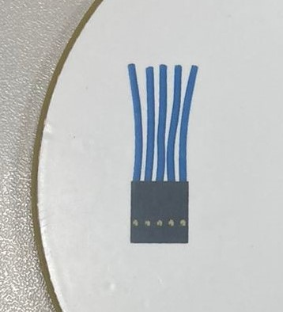
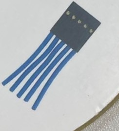
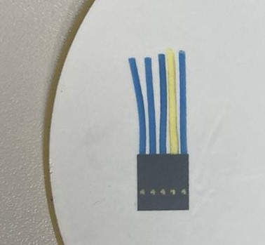
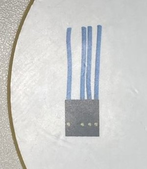

1. Introdução
O nosso projeto teve como objetivo criar um sistema para identificar problemas em transistores, especialmente aqueles relacionados a partes físicas, como terminais faltando ou danificados. Além disso, nós também comparamos o nosso sistema com aqueles usados nas indústrias para detectar falhas em componentes eletrônicos SMDs, que são aqueles que ficam diretamente na placa de circuito. No decorrer do projeto, nós utilizamos diferentes técnicas para identificar essas falhas e analisamos vários fatores que podem influenciar o processo de detecção. Por exemplo, nós estudamos como a iluminação afeta as imagens, como pequenas variações no tempo de processamento do software podem interferir e como garantir que tudo esteja sincronizado corretamente. Também levamos em consideração as especificações da câmera que usamos, como a qualidade da imagem que ela produz, quantas imagens ela captura por segundo e como ela lida com diferentes condições de iluminação. A nossa intenção foi combinar todas essas diferentes peças do quebra-cabeça para criar um sistema que fosse eficaz na detecção de falhas em transistores. Ao compararmos o nosso sistema com aqueles que já são usados na indústria, pudemos ter uma noção de como estamos nos saindo em relação a soluções estabelecidas.
2.Metodologia
Este projeto desenvolveu um sistema de detecção de problemas físicos em transistores, explorando técnicas como filtros de cores e detecção de Regiões de Interesse (ROI). A eficácia do sistema foi avaliada em comparação com soluções industriais, revelando um avanço promissor na detecção de falhas. Podemos discorrer as metodologias como:
3.Materiais
Lista de materiais usados no projeto
3.1 Disco de Prova
Placa de acrilico com impressão de simulacros de transistores BJT - utilizado para simular 2 transistores sem defeito, um com terminal faltante e um terminal danificado
Transistores Sem-Defeito
 Transistores Com-Defeito
 O da direita representa o terminal danificado e o da esquerda com terminal faltante
3.2 Base de Apoio para Camera
Aluminio usinado para poder anexar a camera - a industrial através de parafusos ou a webcam pelo suporte que vem na mesma
3.3 Modelo Funcional
4.Software e Técnicas de Aquisição
Para este projeto foi desenvolvido um script desenvolvido em Python utilizando a biblioteca OpenCV, que tem como objetivo realizar a análise de uma imagem contendo componentes eletrônicos com base em suas cores. O script executa diversas etapas de processamento de imagem, incluindo segmentação por cor, detecção de contornos e visualização dos resultados. O foco principal do script é identificar conectores eletrônicos azuis em uma imagem e determinar se estão presentes em quantidade suficiente.
Segue abaixo os passos do Processamento:
4.1 Importação das Bibliotecas:
O script começa importando as bibliotecas necessárias, OpenCV (cv2) e NumPy.
4.2 Carregamento e Pré-Processamento
A imagem é carregada a partir do caminho especificado.
Verifica-se se a imagem foi carregada com sucesso e o script é encerrado em caso contrário.
A imagem carregada é redimensionada para uma dimensão menor (800x600) usando a função cv2.resize().
A imagem redimensionada é convertida do espaço de cores BGR para o espaço de cores HSV usando cv2.cvtColor().
4.3 Segmentação por Cor
São definidos intervalos de valores no espaço de cores HSV para as cores azul e preta
Máscaras são criadas usando 'cv2.inRange()' para segmentar objetos azuis e pretos na imagem HSV
4.4 Combinação das Máscaras
As máscaras de objetos azuis e pretos são combinadas usando a operação lógica OR.
4.5 Redução de Ruído
É aplicada uma abertura morfológica à máscara combinada usando cv2.morphologyEx() para remover ruídos e artefatos pequenos.
4.6 Detecção de Cotornos
Contornos são detectados na máscara limpa usando cv2.findContours().
Um loop itera pelos contornos detectados e filtra-os com base no tamanho da área.
É determinada uma caixa delimitadora que engloba todos os objetos azuis.
4.7 Sub-Região e Interesse(Sub-ROI)
Com base na caixa delimitadora, é definida uma sub-região de interesse (sub-ROI) na parte inferior da ROI principal.
A sub-ROI é extraída do quadro redimensionado.
4.8 Segmentação por Cor e Análise na Sub-ROI
A sub-ROI é convertida para o espaço de cores HSV.
A segmentação por cor é novamente aplicada à sub-ROI usando o intervalo de cores azuis definido.
Uma abertura morfológica é realizada na máscara da sub-ROI.
São detectados contornos de objetos azuis na sub-ROI.
4.9 Combinação das Máscaras
Os contornos dos objetos azuis detectados na sub-ROI são desenhados em vermelho na imagem da sub-ROI.
O script determina se há exatamente 5 objetos azuis detectados na sub-ROI.
Uma mensagem de resultado ("Passou" ou "Reprovado") é determinada com base na quantidade de objetos azuis detectados.
O contorno da ROI principal é desenhado no quadro redimensionado.
O número de conectores azuis corretamente detectados na sub-ROI e a mensagem de resultado são escritos no quadro redimensionado.
O quadro redimensionado com contornos desenhados e ROIs é exibido usando cv2.imshow().
4.10 Combinação das Máscaras
O script aguarda pressionamento de uma tecla usando cv2.waitKey(0) para manter a imagem exibida aberta.
Após a pressionamento de uma tecla, as janelas são fechadas usando cv2.destroyAllWindows()
5. Desafios
Abaixo temos listados os desafios e resultados do sistema
5.1 Desafio do Jitter
Observamos que o problema do jitter foi notavelmente ampliado pelo tempo de exposição da câmera, como ilustrado na imagem abaixo:
Isso se deu divido as das variações de discrepâncias nos intervalos de captura das imagens, como exemplificado por um ciclo com duração X ms, o próximo com X+1 ms e o subsequente com X-1 ms. Embora essa questão não seja prontamente aparente no projeto em sua forma atual, ela pode desempenhar um papel crítico em aplicações mais complexas. No que tange à estabilidade da imagem, a implementação de uma sólida estrutura foi altamente eficaz na mitigação das vibrações mecânicas do sistema.A estrutura mecânica pode ser vista na foto abaixo:
5.2 Desafio de Iluminação
No contexto de visão de máquina, a iluminação desempenha um papel crucial na aquisição e no processamento de imagens. Uma iluminação adequada é essencial para obter imagens de alta qualidade e garantir a precisão das técnicas de visão de máquina, como detecção de objetos, reconhecimento de padrões, segmentação e medições.A seguir, estão alguns aspectos importantes da iluminação no contexto da visão de máquina: Contraste: A iluminação adequada ajuda a melhorar o contraste entre os objetos e o fundo na imagem. Um bom contraste é essencial para destacar as características dos objetos e facilitar sua detecção e segmentação. Uma iluminação inadequada pode resultar em baixo contraste, dificultando a extração precisa das informações relevantes. Uniformidade: A iluminação uniforme é importante para evitar variações indesejadas no brilho ou na intensidade da luz na imagem. Variações na iluminação podem levar a problemas de detecção e classificação de objetos, pois podem introduzir artefatos ou distorções nas imagens capturadas. Eliminação de sombras: Sombras podem causar problemas significativos na visão de máquina, pois podem alterar a aparência dos objetos e dificultar sua detecção e segmentação corretas. Uma iluminação adequada deve ser projetada para minimizar ou eliminar as sombras, garantindo uma representação mais precisa dos objetos na imagem. Redução de reflexos: Reflexos em superfícies brilhantes podem distorcer a aparência dos objetos e prejudicar a extração correta de características. A iluminação deve ser projetada de forma a reduzir reflexos indesejados, seja por meio de técnicas de iluminação direcional, difusa ou ângulos de incidência adequados. Adaptação à aplicação: A iluminação deve ser ajustada de acordo com a aplicação específica de visão de máquina. Por exemplo, em aplicações de inspeção de qualidade, a iluminação pode ser projetada para destacar defeitos ou características específicas. Em outras aplicações, como reconhecimento de objetos, a iluminação pode ser otimizada para realçar características distintas dos objetos. Controle e sincronização: Em algumas situações, o controle preciso da iluminação e a sincronização com a aquisição de imagens podem ser necessários. Isso pode ser alcançado por meio de técnicas como strobing, que envolve o uso de fontes de luz pulsante sincronizadas com o tempo de exposição da câmera. Esse controle pode ajudar a congelar o movimento do objeto, melhorando a nitidez e a precisão das imagens capturadas. Em resumo, a iluminação adequada é fundamental no contexto da visão de máquina. Uma iluminação bem projetada e controlada pode melhorar o contraste, eliminar sombras e reflexos indesejados, além de fornecer imagens de alta qualidade para as técnicas de processamento de imagem. Ao considerar a iluminação para uma aplicação de visão de máquina, é importante levar em conta os requisitos específicos da aplicação e adaptar a iluminação de acordo.
Foi o problema que mais pressinou nosso projeto devido a escolha de filtros azuis para cor dos componentes
Acima podemos ver o como a iluminação afetou o filtro de azul na deteção de elementos. A direita temos uma aprovação correta e a esquerda uma reprovação incorreta devido a problemas na iluminação.
6. Medidas Reais e Funcionamento
6.1 Fotos dos resultados
6.2 Sistema em Funcionamento
6.3 Comparação com deteção com camera monocromatica industrial
Pensando numa futura aplicação real pensamos em validar como o comportamento do sistema ocorreria numa situação real e criamos alguns resultados preliminares com uma camera monocromatica junto a um sistema de aquisição de imagens de tempo-real. Essas escolhas foram feitas para poder eliminar os dois principais problemas encontrados: Jitter e Iluminação. Devido as seguintes razões:
Exemplo de Detecção de SMD - Posição
Acima podemos observar o como a lente pode ser um fator determinante na escolha do meu sistema porque a mesma vai ser responsável - junto a resolução da camera - definir o nivel de detalhe do meu objeto
SMD Monocromatico ROI

Impacto da Resolução
Outro cuidado que deve se ter com os produtos industriais é a escolha correta do nivel de resolução da camera e o casamento da distância focal da mesma. Como visto na imagem acima isso pode ser determinante para distinguir as bordas de um detalhe que diferenciem um "B" ou um "8"
Conclusões
Até o momento, nosso empreendimento na abordagem de sistema tem produzido resultados altamente promissores na área da detecção de problemas em transistores. Essa abordagem envolve uma sinergia complexa de técnicas inovadoras, entre elas a filtragem de cores meticulosa para isolar características de importância crítica e a subsequente identificação de Regiões de Interesse (ROI) que viabilizam análises específicas, resultando em uma metodologia profundamente sólida e eficaz. No decorrer das avaliações comparativas, nosso sistema ostentou uma capacidade de detecção que se revelou competitiva quando confrontada com soluções industriais já estabelecidas para identificar falhas em componentes eletrônicos SMDs. Tal resultado aponta inequivocamente para a promessa subjacente à nossa abordagem integrada, sugerindo que poderemos aperfeiçoar a qualidade e eficiência do controle de qualidade. Além disso, submetemos nossa estratégia a uma comparação direta com uma câmera industrial monocromática, com o intuito de elucidar as vantagens e limitações inerentes a cada abordagem. Nossas conclusões apontam para a capacidade destacada das câmeras monocromáticas no que concerne à sensibilidade à luz e à representação detalhada. No entanto, nossa técnica de filtragem de cores se sobressaiu ao demonstrar uma eficácia considerável na detecção precisa de problemas específicos em transistores, particularmente em situações com paletas de cores distintas. É crucial enfatizar que, em situações de iluminação desafiadora ou quando a precisão de detalhes é de suma importância, as câmeras monocromáticas podem conferir uma vantagem substancial. Por outro lado, nossa abordagem está estrategicamente sintonizada para a detecção minuciosa de problemas em componentes que exibem variações de cores. Embora nossas conclusões iniciais sejam encorajadoras, reconhecemos a necessidade vital de expandir a avaliação em diversas circunstâncias de iluminação e categorias de defeitos. Além disso, planejamos aprofundar a otimização dos parâmetros envolvidos e conduzir análises ainda mais abrangentes das especificações da câmera, visando aprimorar de forma contínua o desempenho do sistema. A metodologia eclética, que amalgama uma gama de técnicas de ponta e avaliações exaustivas, estabeleceu uma base sólida para o desenvolvimento de sistemas de detecção de falhas em transistores que possui um potencial notável para gerar impactos positivos na indústria de componentes eletrônicos. A comparação direta com câmeras monocromáticas, embora tenha realçado a utilidade intrínseca de nossa abordagem em cenários que envolvem detecção de problemas coloridos, também nos insta a reconhecer que nossa técnica demandará ajustes meticulosos para maximizar sua eficácia em todas as aplicações.